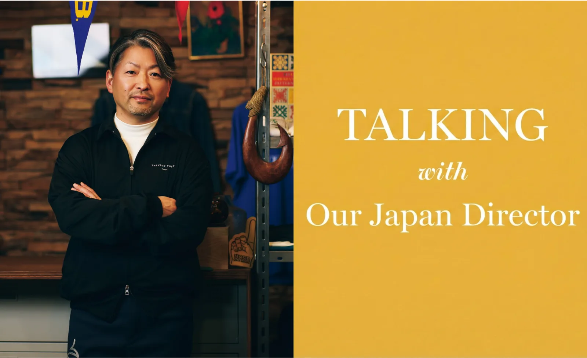
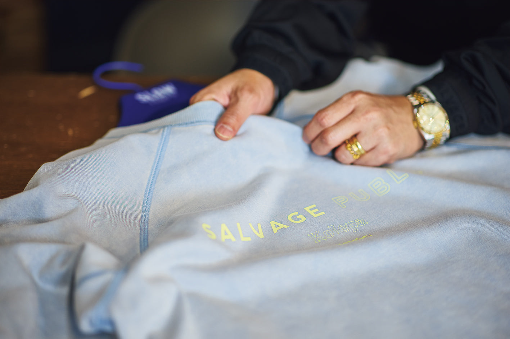
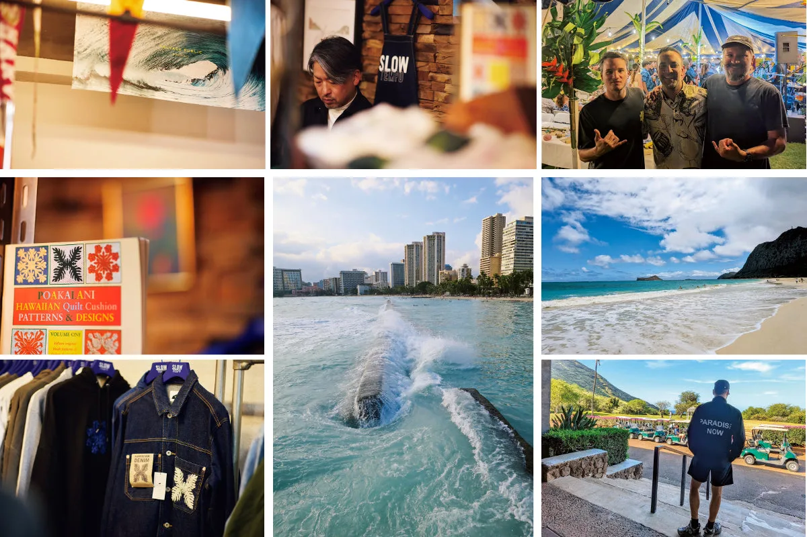
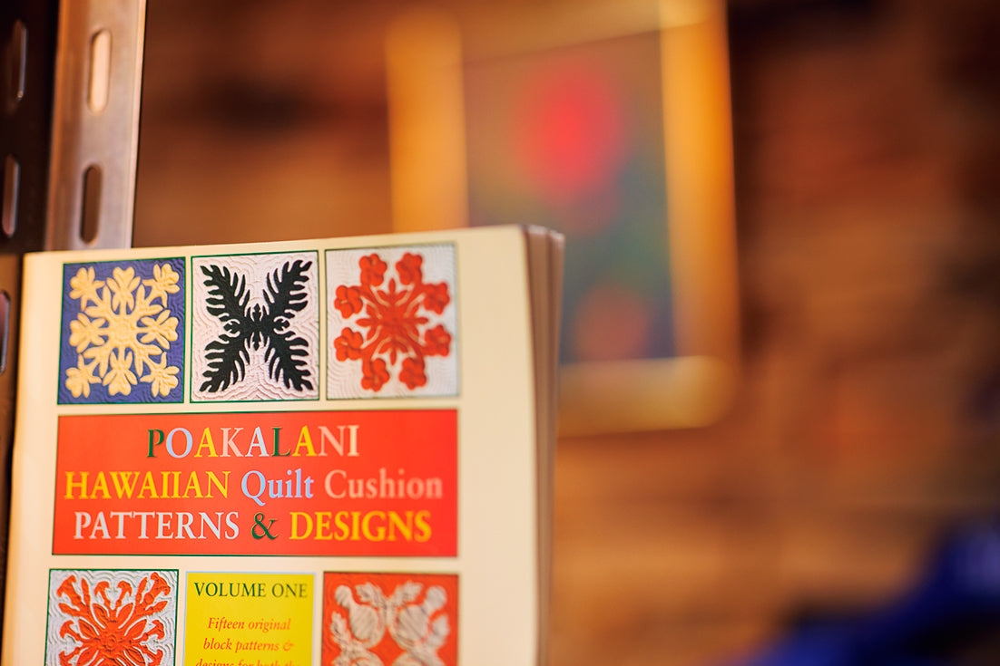
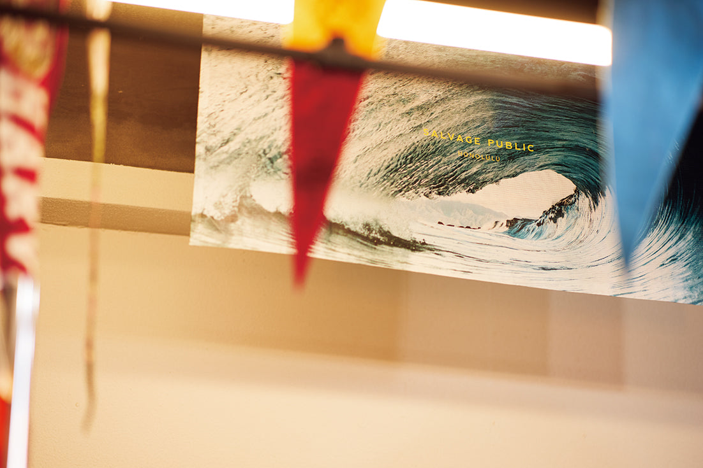
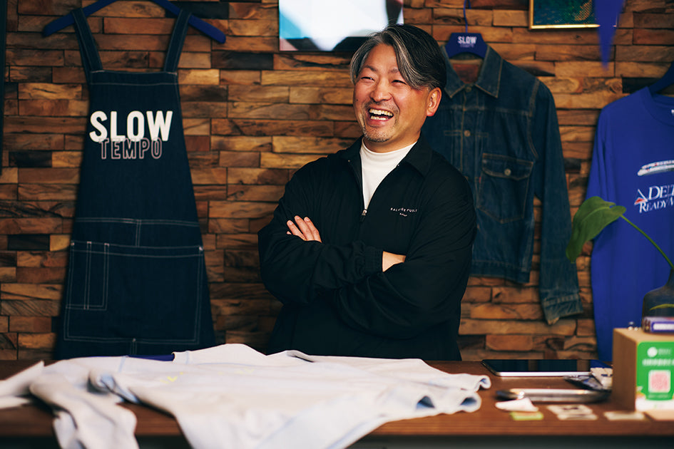

オーシャンライクなリラックススタイルを提案するハワイの人気ブランド「SALVAGE PUBLIC/サルベージ パブリック」と
GOLF雑誌「EVEN」がタッグを組んだコレクション
「SALVAGE PUBLIC Kolepa/サルベージ パブリック コレパ」。
“Kolepa”とはハワイの言葉でゴルフを意味します。
ハワイブランドならではのリラックス感やコンテンポラリーなデザインはそのままに、
考え抜かれた機能性を備えた今までにないゴルフウェア。

26SSのムードを小野寺氏は「毎シーズン共通ですが、ハワイの大自然からインスピレーションを得たカラーと、 どんなフィールドでも着られる機能性を大切にしています」と語る。 象徴的なのがフェード感のあるオーシャンブルーなどの色使い。 トラッド回帰の気分を受け、ドリズラージャケットなどクラシックなアイテムも機能素材で再構築。 ハワイの空気と都市の感性が、ゴルフ場でも自然と重なり合う。

小野寺氏は2003年頃からLAやNYを中心に仕事でメインランドを訪れていた。 2015年、ハワイでSALVAGE PUBLICに出会った際、 「LAやNYのブランドだと思っていた。上品でモダンだったし」と振り返る。 聞けばハワイ発と知り、衝撃を受けたという。 象徴的なキルト柄は〝ポアカラニハワイアンキルト〞という老舗の会社がパテントを所有し、 デザイナーのJOEは親戚関係であった。

小野寺氏は、SALVAGE PUBLICを〝ハワイ版ラルフローレン〞のような存在だと表現する。 「仲間が誇らしげに着てくれる。その姿を見ると、まだまだやれると思えるんです」。 日本での本格上陸から10周年を迎えるが、 「正直、まだ2割くらいしか魅力を伝えられていない」と語る。

最後に読者へ「SALVAGE PUBLIC Kolepa」はリアルなハワイアンたちが手掛ける唯一無二のブランド。 これからもっと面白くなります。ぜひ一緒に、その変化を楽しんでほしいですね」。

ーー有限会社デルタ代表取締役 小野寺武人
〈melple〉〈SALVAGE PUBLIC〉など、今の時代感を捉えた国内外のアパレルブランドを取り扱い、 複数のインポートブランドのディストリビューターとして 日本国内でのマーケティングやセールスもおこなっている。